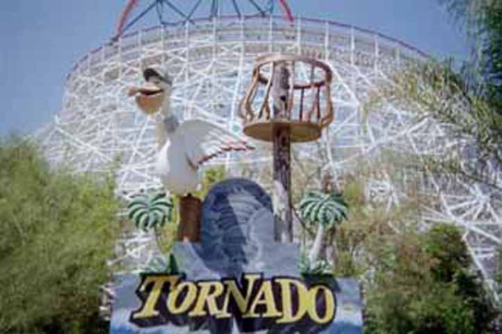
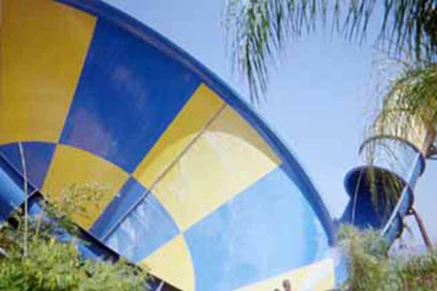
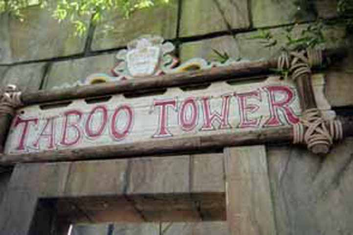
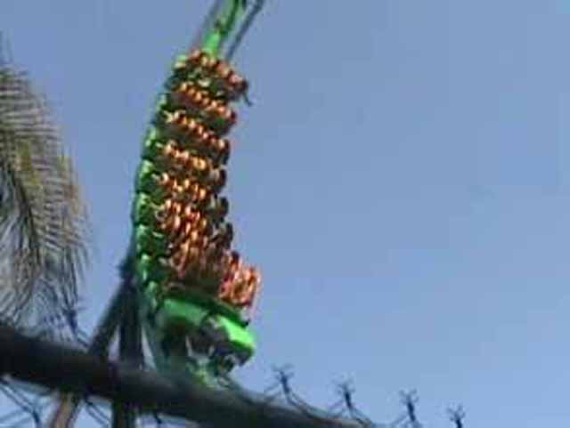
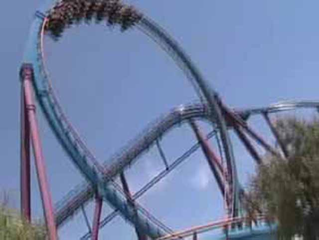

SFHH/SFMM

Today is the day we go to Six Flags Hurricane Harbor as well as Six Flags Magic Mtn. Back to the update, This is Tornado.

Since Thunder down under will be closed at PGA, I'll just have to deal with Tornado. Its still fun and still better than Dragons Den though.
Hi I'm Celeste! I love Bamboo Racer! I almost love it as much as I love Ninja! I love it so much that I'm getting up to get in line again and, ah crap I had too much sugar today!
 Here you can see the twisted mess that is Twisted Fang and Coiled Cobra. They may look fun, but they're both pretty painful waterslides.
Here you can see the twisted mess that is Twisted Fang and Coiled Cobra. They may look fun, but they're both pretty painful waterslides.
 Stupid Venom Drop was closed today.
Stupid Venom Drop was closed today.

Tabbo Tower. Home to Escape Chute, Which Cody is strangely addicted to.
 I don't see whats so great about it. The airtimes painful and Daredevil and Secert Passage just seem better.
I don't see whats so great about it. The airtimes painful and Daredevil and Secert Passage just seem better.
There sits Taboo Tower in all its glory.
Hey Soak Citys! Even SFHH tried to theme their bucket!
We conquered SFHH in an hour, SFMM was empty, We had season passes, Why not head over to SFMM.
 When the brand spankin new Tatsu has a 15 min wait in the middle of Sunday, its not crowded.
When the brand spankin new Tatsu has a 15 min wait in the middle of Sunday, its not crowded.
 Hey Celeste! Don't you wish you could ride Ninja and Bamboo Racer on the same day!
Hey Celeste! Don't you wish you could ride Ninja and Bamboo Racer on the same day!
It took less than 5 min to quene, ride and leave Superman!

Riddlers had a short wait, It was fun, we got other rides to conquer!
We did Batman in 5 min and this is the weirdest coaster shot ever!
 Collosus may look good, but Morgan trains, trim brakes and need of retracking makes this ride suck.
Collosus may look good, but Morgan trains, trim brakes and need of retracking makes this ride suck.

Scream is making me want to return to SFMW more and more in my Norcal trip.
 Goliath is tall, fast and fun.
Goliath is tall, fast and fun.
 Hooray! More Arrow Rides! More brain damage! Viper was actually running well today!
Hooray! More Arrow Rides! More brain damage! Viper was actually running well today!
Luckily, DejaVu has a single rider line! It cuts 110 min in line!
 Since Tatsu still has a 15 min wait, lets go ride it!
Since Tatsu still has a 15 min wait, lets go ride it!
The bloods rushing straight to my head!
Home